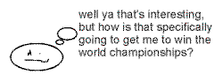
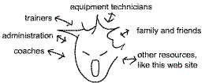

| OVERVIEW |
|
Welcome to Self Directed Coaching (SDC) Cyber Site. This is a neuropsychology resource for elite athletes. Here you will find neuropsychological resources for elite atheletes to aid in motor learning and performing. This site uses differential psychology, which studies individual differences in behaviour. |
Go down to [Self Directed Coaching for Elite Athletes] [SDC Direction in Sport Psychology] |
|  |
<<
Common reaction to sport psychology stuff: None-the-less, sport psychology is important because FOR THE BODY TO WORK RIGHT, THE WHOLE BRAIN AND NERVOUS SYSTEM MUST BE WORKING RIGHT. |
| Many international level athletes say "I'm pretty well on my own" when referring to the integration of resources into a progressive competitve package. Unfortunately, this touches the backbone of what coaching is all about: |  |
| top of page |
Traditional services provided by a sport psychologist:
imagery training, arousal management, attention, relaxation training,
competitive pressure management, motivational strategies,
substance abuse management, eating disorders, weight management, and
programs to cope with retirement.
| As you can see, there are many programs for councelling athletes and many subjective performance enhancement strategies. To be more objective, SDC uses neuropsychological concepts top develop a more explicit definition and application of how athletes are perceiving and reacting. These principles aid motor learning and performing by creating a link between the physics of movement and sport environment, with the perception and thinking behind it. |
Traditional research in sport psychology:
The goal is to find commonalities amongst elite athletes, and then developing
programs to "mold" a world champion, based on these commonalities.
| There are a lot of problems with this approach. See Psychology: Why Elite Athletes are Misunderstood for a more detailed explanation. Rather than "molding" athletes, SDC uses a differential approach: nurturing an athletes assets, be it physical, cognitive, personality etc., and then integrating them into a unique package. This is because athletes at the international level are differentiated by their uniqueness, not their similarities to one another. |
In summary, the goal of this SDC site is to develop more explicit control over what an athlete is perceiving and how s/he is reacting in a sport situation (i.e. neuropsychology), along with consistent purpose and direction in training. (i.e. differential psychology) Most importantly, these ideas should work in a self-directed fashion, so the athlete is self-sufficient and in control. Specifically, SDC is a guide of questions athletes can ask themselves to find the solutions for better tournament performance. The focus is on the process (methodology), and not the end result; because for many elite athletes, setting a new standard means breaking into new ground which noone has defined yet.
The sections of this site are as follows:
| top of page |
|
|
|
|
|
|